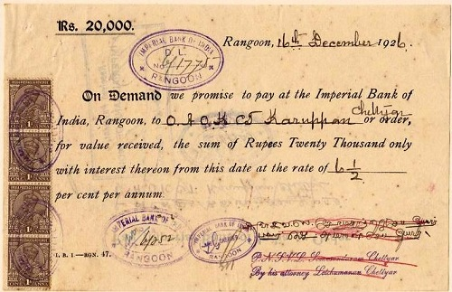
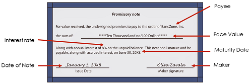

Bank Discount and Promissory Note
Learning Outcomes
By the end of this chapter, student should be able to
- explain the meaning of a promissory note,
- list the main features of a promissory note,
- compute the face and maturity values of a promissory note,
- explain the meaning of bank discount,
- compute the bank discount and proceeds, and
- compute simple interest rate that is equivalent to discount rate.
Learning Slides


Learning Videos
Promissory Note
Definition: A signed document containing a written promise to pay a sum of money at specified date with or without interest. There note can be with or without interest. In this course, the interest bearing note will be calculated as simple interest using Banker’s Rule.

How does it work?
Consider the following situation.
Meet Chris. He is your loan officer. The bank where he works is willing to loan you money so you can purchase a building for your growing business. Of course, Chris won’t just hand you the RM500,000 in cash you need to purchase the building. That would be foolish, for how would Chris know that he would get that borrowed money back from you?
What Chris does is to write up a promissory note for you. This note is a promise of payment. Once you sign this note, you agree to pay back the money along with any additional fees involved by a specific date.
Terms
This promissory note that Chris has you sign is not just a sticky note saying that you will pay back the RM500,000 at some time in the future. This note goes into detail. It contains the terms or conditions that you will follow to pay back this large amount. It includes the interest rate that the bank charges you for borrowing money. This is how the bank makes money off of this transaction. It also includes the payment’s terms, such as when you are going to make payments and when the final payment will be made and the loan fully paid off.
In exchange for this loan, the bank also will keep the deed of ownership to the building until your loan is paid off. This is also specified in the promissory note. Once your loan is paid off, then the bank will give you the deed of ownership. But until then, the bank owns the building. This provides the bank with security in case you end up not paying them back.
You might see your promissory note written like this:
- Amount: RM500,000
- Date: Today
- Interest Rate: 5% annually
- Payment Amount: RM2,684.11 due the first of each month
- Payoff Date: 30 years from today
This promissory note is telling you that you have 30 years to pay off this loan. If you make a payment of RM2,684.11 every month for 30 years, you will have paid off your loan at the end of 30 years. This amount includes the annual interest rate of five percent.
Features of Promissory Note
When writing a promissory note, the following items has to be considered:
- Maker : The name of person that sign the note (debtor)
- Payee : The name of person that receive the note (creditor)
- Face Value : The amount stated on the note or the amount borrowed
- Date Issue : The date of the note is signed
- Time (Term) : The length of period (must have if maturity date not stated)
- Interest rate : the rate charge for interest bearing note (simple interest)
- Maturity Date : The date the debt must be paid (optional)
- Maturity Value : The amount has to be paid including interest (optional)
As illustration of the above features, see the picture below:

How to find the maturity value for interest bearing note?
In most situation, for an interest bearing note, the maturity value is not stated on the note. For this situation, the maturity value can be calculated using the simple interest amount formula, i.e.,
\[ S\ =\ P(1\ +\ rt) \]
Note: only simple interest using Banker’s Rule will be used in this lesson.
Bank Discount
It is a common practice by the bank to deduct charges from a loan in advance. This charges is called bank discount. Note that in bank discount it is different from the case of simple interest. In simple interest, the amount of maturity value is more than the amount borrowed. In addition, normally in the beginning you have an amount that eventually will be more after certain time period, such that the present value is lower than the future value. However, in bank discount it is the other way around. Thus, in bank discount, the amount borrowed is actually the maturity value, not the principal or the present value.
Consider a scenario where you borrow RM10,000 for 6 months from a bank that charged you a bank discount at a rate of 5% per annum. In this case, 5% of RM10,000 is RM500. So, the bank will deduct RM500 from the amount of loan RM10,000 in advance. Hence, you will only received RM9,500 from the loan you made with the bank.
Thus,
- The money that the bank deduct in advanced is called Bank Discount - D = RM500
- The money left receives by the borrower is called Proceeds - Proceeds = RM9,500
- The maturity value is the value of the money actually borrowed - S = RM10,000
To calculate the Bank Discount and Proceeds, we will use the following formula:
\[ \begin{aligned} D\ &=\ Sdt \\ \\ where,\ D\ &=\ Bank\ discount \\ d\ &=\ discount\ rate \\ t\ &=\ term\ of\ discount\ in\ years. \\ \end{aligned} \]
and,
\[ \begin{aligned} Proceeds,\ H\ &=\ Maturity\ value\ –\ Bank\ discount\\ H\ &=\ S\ –\ D\\ H\ &=\ S\ –\ Sdt\\ H\ &=\ S( 1 - dt)\\ \end{aligned} \]
Sometimes, bank charged for their service with simple interest rate in mind. So, they will find the equivalent discount (service charge) rate to the intended simple interest rate that they want to obtain. Below are the two formulas that can be used to calculate these rates.
\[ r\ =\ \frac{d}{1\ -\ dt}\ \ \ \ \ \ \ \ and\ \ \ \ \ \ \ \ d\ =\ \frac{r}{1\ +\ rt} \]
Practice Questions
Question 1
Farid owned a note dated 9 Aug 2001 without interest for RM676. He discounted the note at 6% and received proceeds of RM670.37. When was the maturity date of the note if the note was discounted on 14 Sept 2001?
Question 2
Abu received a 180 day promissory note worth RM4500 at 8.5% simple interest on 14th August 1999 from Sahara. However, on 24th November 1999 Abu sold the note to a bank at the discount rate of 7.5%.
i. Find the discount term.
ii. Find the proceeds.
iii. Find the equivalent simple interest rate that is charged by the bank.
Question 3
Ann received a 100 day promissory note with simple interest of 8%. The maturity date of the note was on 5th December 1997. On 1st October 1997, Ann discounted the note to a bank with a discount rate of 10% and received proceeds of RM8012. Find the face value of the note.
Question 4
A promissory note dated 5th July 1998 was discounted 30 days before maturity at a discount rate of 6%. The proceeds obtained was RM2487.50.
i. Find the maturity value of the note.
ii. If the note was kept for 10 days after 5th July 1998, when was the discount date?
iii. Find the term of the note.
iv. Find the face value of the note if the interest rate is 6.5%.
Question 5
On 16 March 2009, Samy received a 120-day promissory note with simple interest rate of 11% per annum. On 12 May 2009, he discounted the note at a discount rate of 10% and received proceeds of RM2,978.86. Find the:
i. maturity date (14th July 2009)
ii. maturity value (RM3031.92)
iii. value of bank discount (RM53.06)
iv. face value. (RM2924.68)
Question 6
Fahrin received a 100-day promissory note on 17th June 2008 with simple interest rate of 5% per annum. After 40 days, he discounted the note at a discount rate of 3% and received proceeds of RM12,188.75. Find:
i. the maturity date. (25th September 2008)
ii. the maturity value. (RM12250)
iii. the face value. (RM12082.19)
iv. the amount of interest received by Fahrin. (RM106.56)
Question 7
A 5-month promissory note with an interest rate of 10% would mature on 25th September 2008 with a maturity value of RM4200. The note was discounted 2 months before the maturity date and the proceeds received was RM4151. Find:
i. the face value. (RM4032)
ii. the discount amount charged. (RM49)
iii. the discount rate charged. (7%)
iv. the simple interest rate that is equivalent to the discount rate in (iii). (7.08%)
Question 8
Aznil received a 150-day promissory note with a face value of RM10,000 dated 5 January 2007. The maturity value was RM10,375. He later discounted the note on 30 April 2007 at a discount rate of 7.6%. Find:
i. the maturity date of the note. (4th June 2007)
ii. the interest rate of the note. (9%)
iii. the proceeds received. (RM10298.34)
Question 9
Manja Enterprise received a 5-month promissory note valued at RM10000 with an interest rate of X%. The note matures on 6 October 2007 with a maturity value of RM 10237.50. On 11th August 2007 Manja Enterprise discounted the note at a bank at the rate of 7%. Find:
i. the date of the note (6th May 2007)
ii. the interest rate X% (5.7%)
iii. the discount term (56 days)
iv. the proceeds received. (RM10126.03)
Question 10
Ziman received a 100-day promissory note for RM5,000 dated 10th September 2005.The simple interest charged was 6.5%. He later discounted the note on 30th October 2005 and received proceeds of RM5030.19. Find:
i. the maturity date of the note (19th December 2005)
ii. the maturity value of the note (RM5090.28)
iii. the discount rate. (8.50%)
Acknowledgments
Some of the notes above are taken from online course Business 110: Math Class from Study.com
Promissory Note: Terms & Calculations. (2015, January 3). Retrieved from https://study.com/academy/lesson/promissory-note-terms-calculations.html.
A 1926 promissory note from the Imperial Bank of India, Rangoon, Burma for 20,000 rupees plus interest. Retrieved from https://en.m.wikipedia.org/wiki/promissory_note.
News-and-Views Promissory Note ; The Detail. Retrieved from https://nazarsudhakar.blogspot.com/2014/02/promissory-note-details.html.